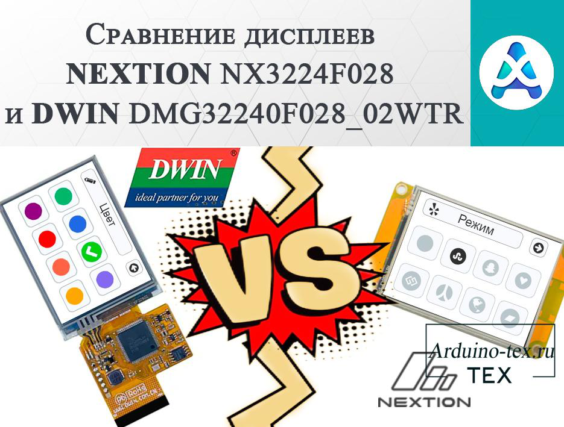
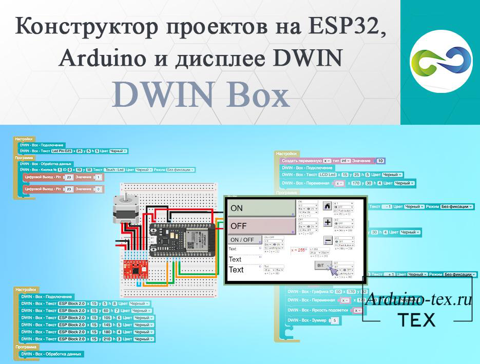
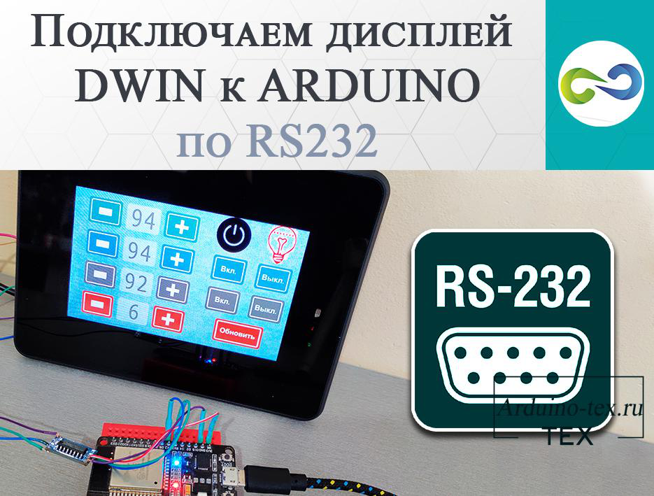
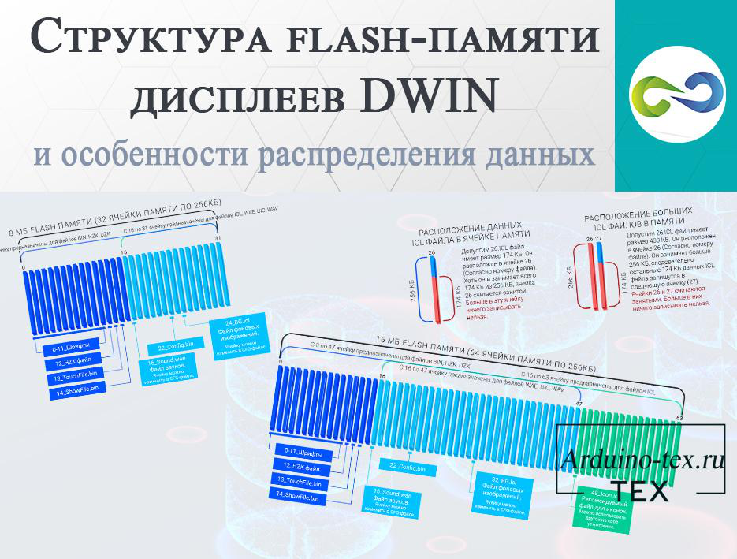
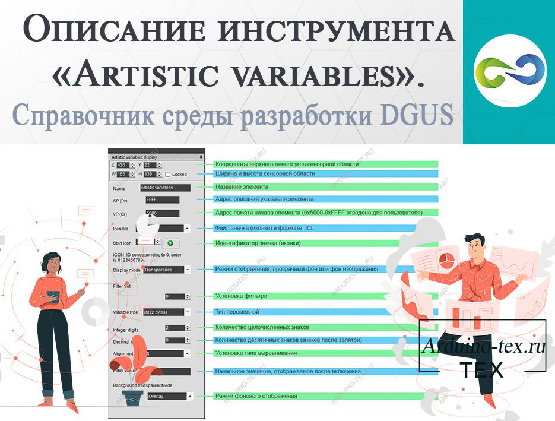
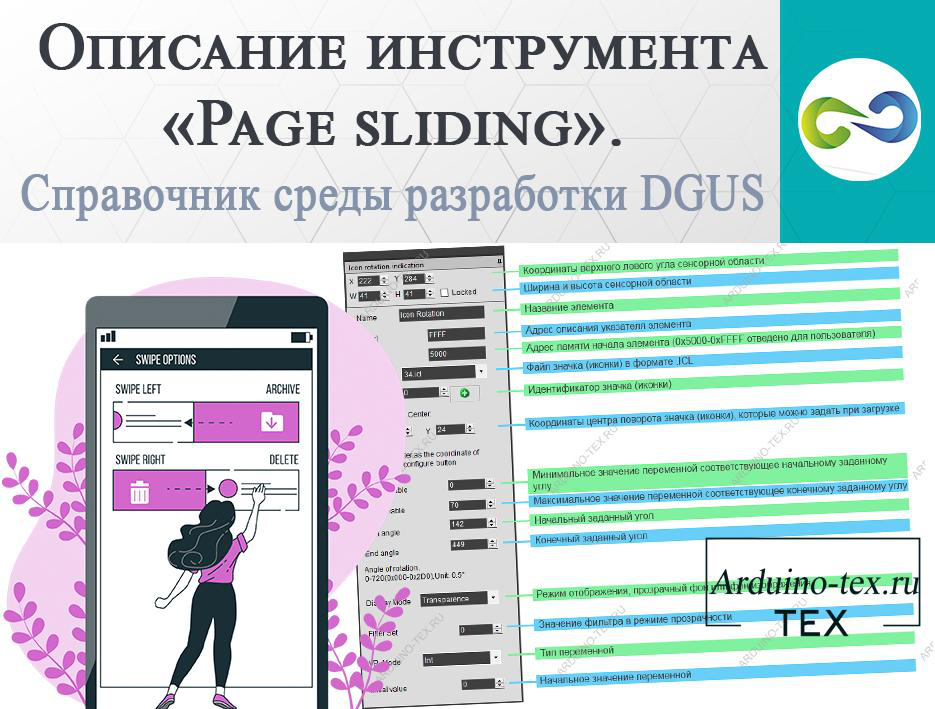
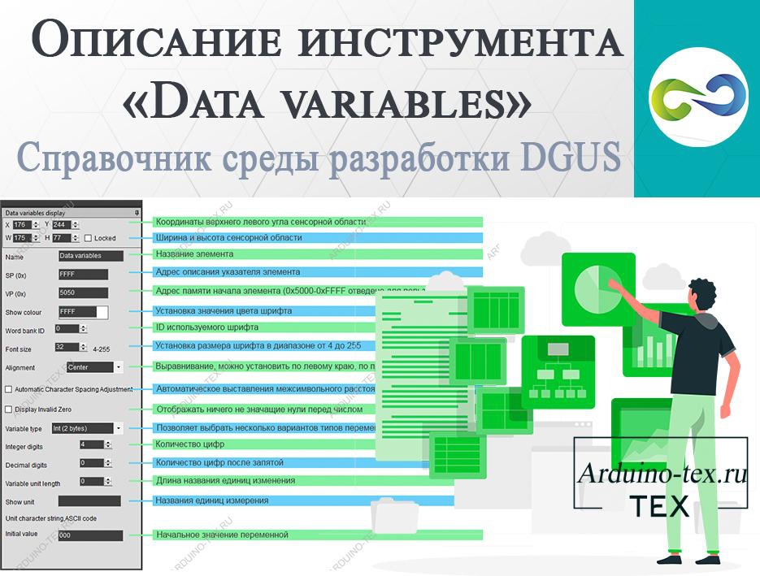
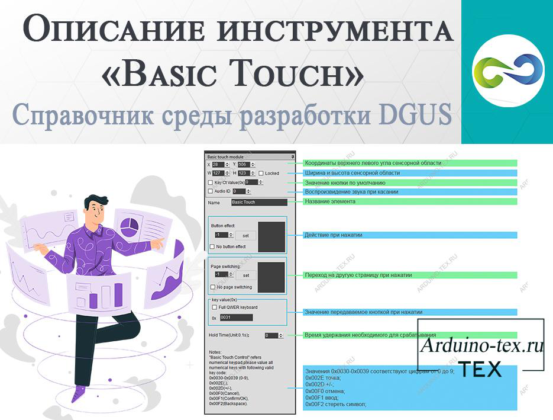
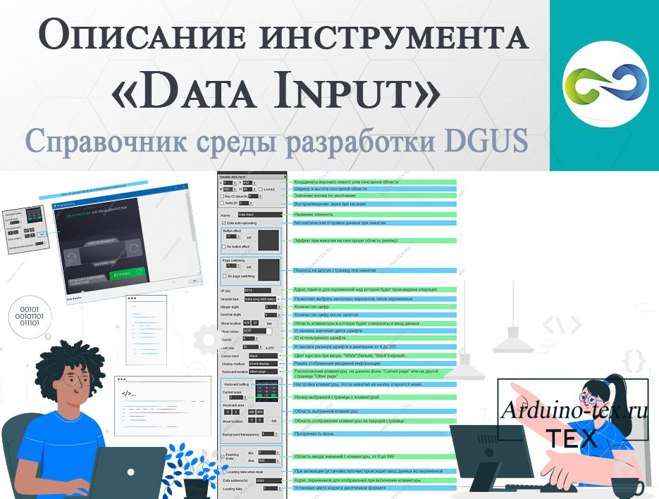
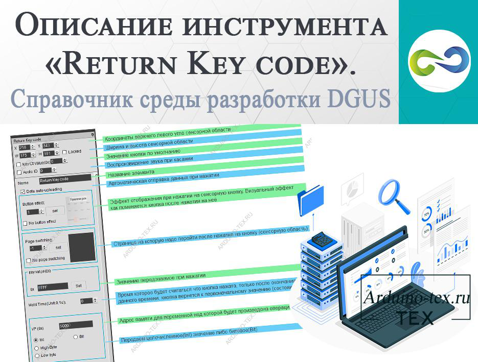

Статьи о компании и дисплеях DWIN.
В данном разделе сайта вы найдёте статьи о компании Beijing DWIN Technology, а также новости о продукции, которую она производит.
Компания Beijing DWIN Technology Co. Ltd занимается производством дисплейных HMI модулей с 2003 года. Название тесно связано с корпоративной философией взаимной выгоды:
«Win – Win» = DoubleWIN.
Выигрыш - Выигрыш = Двойной выигрыш.
Это значит взаимовыгодно — взаимовыгодно с другими расти вместе.
Сравнение дисплеев NEXTION NX3224F028 и DWIN DMG32240F028_02WTR.

Дисплеи NEXTION NX3224F028 и DWIN DMG32240F028_02WTR представляют собой 2.8-дюймовые сенсорные HMI дисплеи с разрешением 320x240 пикселей. Оба дисплея обладают уникальными характеристиками и функциональностью, которые заслуживают сравнения для определения наилучшего варианта. Цель данного исследования - провести сравнительный анализ характеристик и функциональности дисплеев NEXTION NX3224F028 и DWIN DMG32240F028_02WTR. Мы рассмотрим технические характеристики: память, процессор, сенсор, а также наличии и стоимости аксессуаров. Также, для объективности, создадим единый интерфейс на обоих дисплеях, с помощью кторого будем управлять подсветкой на адресных светодиодах ws2812b.
7 июля 2023 197
Подробнее …
Конструктор проектов на ESP32, Arduino и дисплее DWIN - DWIN Box.

Дисплеи компании DWIN достаточно недорогие и функциональные, что делает их интересным решением при реализации своих проектов и DIY. Но, несмотря на плюсы, есть и минусы — это среда разработки DGUS, которая на английском языке, и при разработке интерфейса требуется подготовить графические элементы. Эти небольшие особенности приводят к сложностям быстрой реализации проекта на дисплее от компании DWIN Technology. Исходя из этого, было принято решение сделать простой конструктор, который позволит без программирования и отрисовки кнопок, слайдеров, плашек под текст создать проект с использованием дисплея DWIN. Конструктор DWIN Box был интегрирован с блочным программированием. Ниже вы можете посмотреть презентацию от разработчика ArduBlock.
17 февраля 2023 274
Подробнее …
Подключаем дисплей DWIN к ARDUINO по rs232.

У компании DWIN есть линейка дисплеев в корпусе, которые имеют пылевлагозащиту IP65 и удобные крепежи для монтирования. К таким дисплеям относятся дисплеи серии DMG*****_15W* различного размера с резистивным сенсором. Например: DMG80480T070_15WTR, DMG10600C101_15WTR, DMG80600T080_15WTR.
И дисплеи серии DMG*****_A5W* различного размера с ёмкостным и резистивным сенсором. К ним относятся следующие модели: DMG80480T043_A5WTC или DMG80480T043_A5WTR, DMG80480T050_A5WTC или DMG80480T050_A5WTR, DMG10600T070_A5WTC или DMG10600T070_A5WTR, DMG10600T101-A5WTC или DMG10600T101-A5WTR.
13 января 2023 198
Подробнее …
Структура flash-памяти дисплеев DWIN и особенности распределения данных.

На нашем сайте Arduino-Tex.Ru много полезной информации по работе с дисплеями DWIN. От описания инструментов среды разработки DGUS, которые вы можете найти в разделе «Статьи про DWIN» до проектов, реализованных на дисплеях DWIN. Сегодня рассмотрим структуру flash-памяти дисплеев DWIN и как правильно распределить память. А также рассмотрим, в какой области памяти нужно хранить шрифты, конфигурационные файлы, файлы с картинками .icl и звуковые файлы .wae.
В чём отличие распределения памяти дисплеев серии COF и COB.
9 декабря 2022 228
Подробнее …
Описание инструмента «Artistic variables». Справочник среды разработки DGUS.

При реализации проектов с использованием HMI дисплеев требуется выводить цифровую информацию. Иногда требуется вывод цифр в определённом стиле. Например, как сделано в проекте «Часы с функцией плеера и ночника на сенсорном дисплее».
В среде разработки DGUS дисплеев DWIN есть инструмент «Artistic variables», который позволяет подменить цифры на иконки, которые можно создать самостоятельно. Для этого достаточно создать 10 иконок и загрузить их в дисплей. И программа автоматически выведет однозначное, двухзначное, трёхзначное число и больше символов без дополнительного написания кода или манипуляций. Достаточно удобно, не правда ли!
21 октября 2022 233
Подробнее …
Описание инструмента «Page sliding». Справочник среды разработки DGUS.

В большинстве проектов с использованием сенсорных дисплеев необходимо реализовывать несколько страниц управления. Для перехода между ними используется обычная кнопка. Урок по работе с кнопкой можно посмотреть тут. В дисплеях от компании DWIN есть возможность перелистывать страницы, для чего необходимо сделать движение пальцем в нужном направлении. Для этого в среде разработки DGUS используется инструмент «Page sliding».
Описание инструмента «Page sliding».
15 августа 2022 221
Подробнее …
Описание инструмента «Data variables». Справочник среды разработки DGUS.

При реализации проектов с использованием сенсорного дисплея сложно обойтись без вывода цифровых данных. Вывод целочисленных и дробных значений на дисплеи DWIN осуществляется с помощью инструмента «Data variables». В среде разработки DGUS также предусмотрен инструмент «Artistic variables», который позволяет вывести свои цифры в виде иконок. Про него поговорим в следующий раз, а сегодня подробнее разберём инструмент «Data variables».
Описание инструмента «Data variables».
4 августа 2022 196
Подробнее …
Описание инструмента «Basic Touch». Справочник среды разработки DGUS.

Одной отличительной особенностью дисплеев DWIN является возможность создания собственной текстовой и цифровой клавиатуры. Вывод цифровой клавиатуры рассмотрели при разборе работы с инструментом «Data Input», а для создания обработчика нажатия на клавиши цифровой клавиатуры используется инструмент «Basic Touch». Также данный инструмент можно использовать для решения других задач.
Инструмент среды разработки DGUS «Basic Touch».
2 августа 2022 217
Подробнее …
Описание инструмента «Data Input». Справочник среды разработки DGUS.

В проектах с использованием дисплея часто требуется устанавливать цифровые значения. Для этого можно использовать инструмент «Incremental Adjustment», который позволяет увеличивать или уменьшать значение на указанное число. Но такое решение не всегда применимо. Например, если нужно задавать значения в большом диапазоне. Для решения данной задачи отлично подойдёт цифровая клавиатура, которую можно сделать с помощью «Data Input». Подробное описание данного инструмента можно найти в официальной инструкции среды разработки DGUS, скачать которую можно с официального сайта компании DWIN или внизу статьи в разделе «файлы для скачивания».
Описание инструмента «Data Input».
25 июля 2022 243
Подробнее …
Описание инструмента «Return Key code». Справочник среды разработки DGUS.

Данный инструмент позволяет создавать меню для перехода между страницами проекта. А также создавать кнопки, которые позволяют взаимодействовать с другими элементами на экране и отправлять данные по UART на микроконтроллер. Более полное описание данного инструмента можно прочитать в инструкции на английском языке, а скачать её можно внизу статьи в разделе «файлы для скачивания».
Инструмент среды разработки DGUS «Return Key code».
19 июля 2022 243
Подробнее …